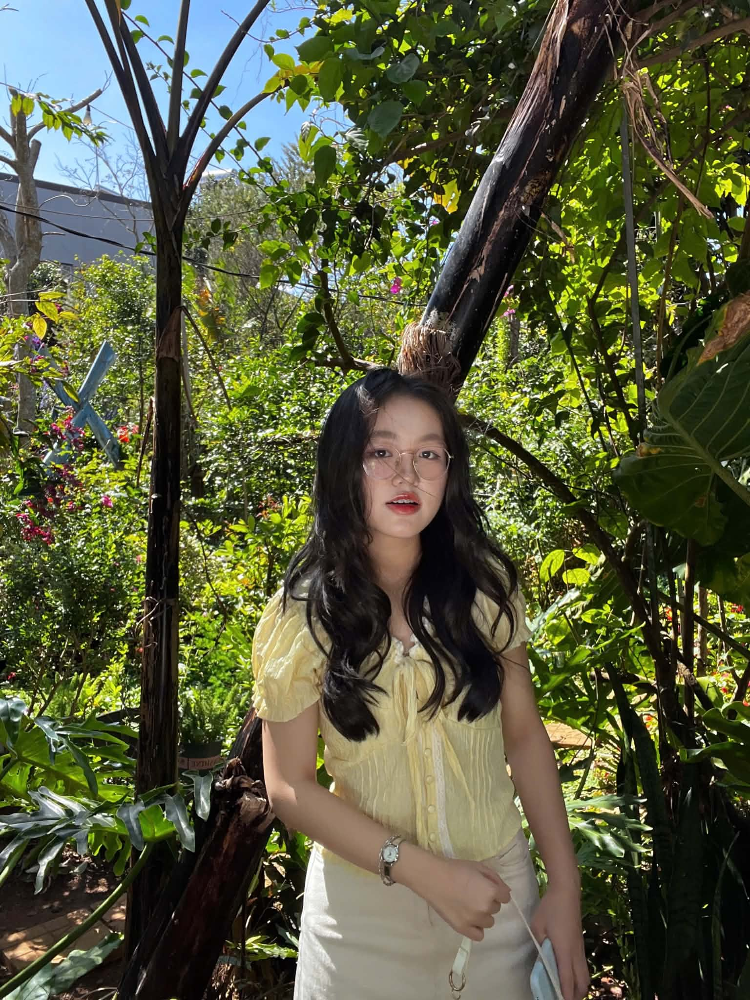

1. Giới Thiệu Bản Thân

Xin chào thầy cô và các bạn! Mình là một cô gái hòa đồng, kiên nhẫn, yêu trẻ nhỏ và luôn ấp ủ ước mơ được đứng trên bục giảng để gieo những hạt mầm tri thức đầu tiên cho các em nhỏ.
- Họ và tên: Vũ Lê Phương Thùy
- Lớp: 12A10
- Trường: THPT Đăk Mil
- Sở thích: Đọc sách, làm đồ thủ công trang trí, kể chuyện và tham gia các hoạt động Đoàn - Đội.
- Châm ngôn sống: "Người thầy cầm tay, mở ra trí óc và chạm đến trái tim."
2. Kế Hoạch Định Hướng Nghề Nghiệp Bản Thân

Mục tiêu nghề nghiệp: Trở thành một Giáo viên Tiểu học tận tâm, sáng tạo, không chỉ truyền đạt kiến thức cơ bản mà còn giúp học sinh hình thành nhân cách tốt đẹp và niềm vui đến trường mỗi ngày.
Giai đoạn 1: Ngắn hạn (Năm lớp 12)
Tập trung cao độ ôn thi Tốt nghiệp THPT theo tổ hợp xét tuyển ngành Giáo dục Tiểu học. Rèn luyện chữ viết đẹp, kỹ năng giao tiếp, thuyết trình và giữ gìn sức khỏe thật tốt.

Giai đoạn 2: Trung hạn (2027 - 2031)
Đỗ vào chuyên ngành Giáo dục Tiểu học tại trường Đại học Sư phạm. Tích cực rèn luyện nghiệp vụ sư phạm, làm đồ dùng dạy học trực quan và tham gia các chuyến tình nguyện dạy học cho trẻ em vùng khó khăn.

Giai đoạn 3: Dài hạn (Sau 2031)
Tốt nghiệp Đại học loại Giỏi và trở thành giáo viên chính thức. Không ngừng đổi mới phương pháp giảng dạy, ứng dụng công nghệ thông tin vào bài giảng để mỗi tiết học đều sinh động và bổ ích.